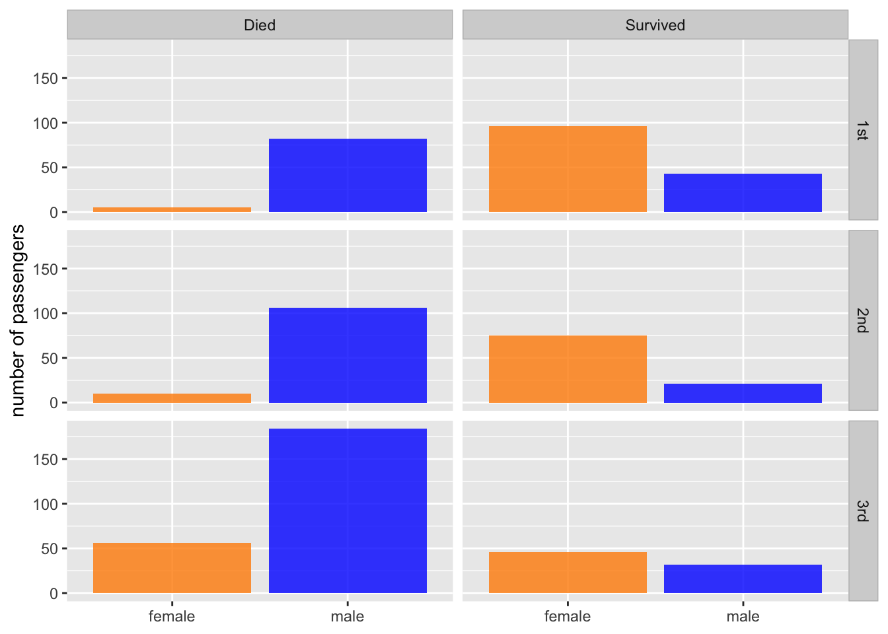
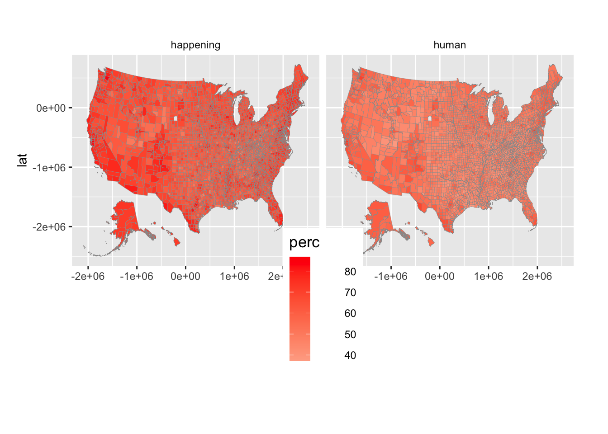
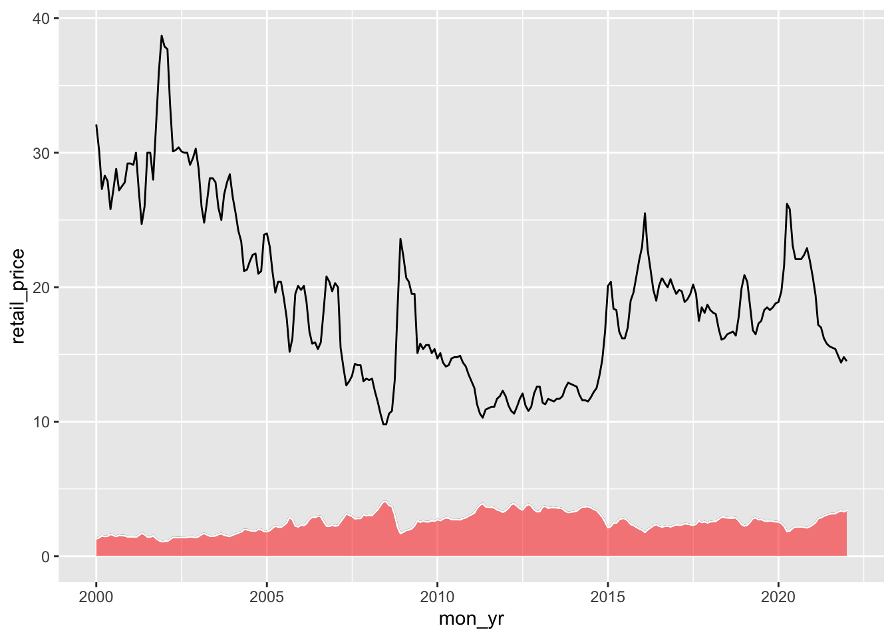
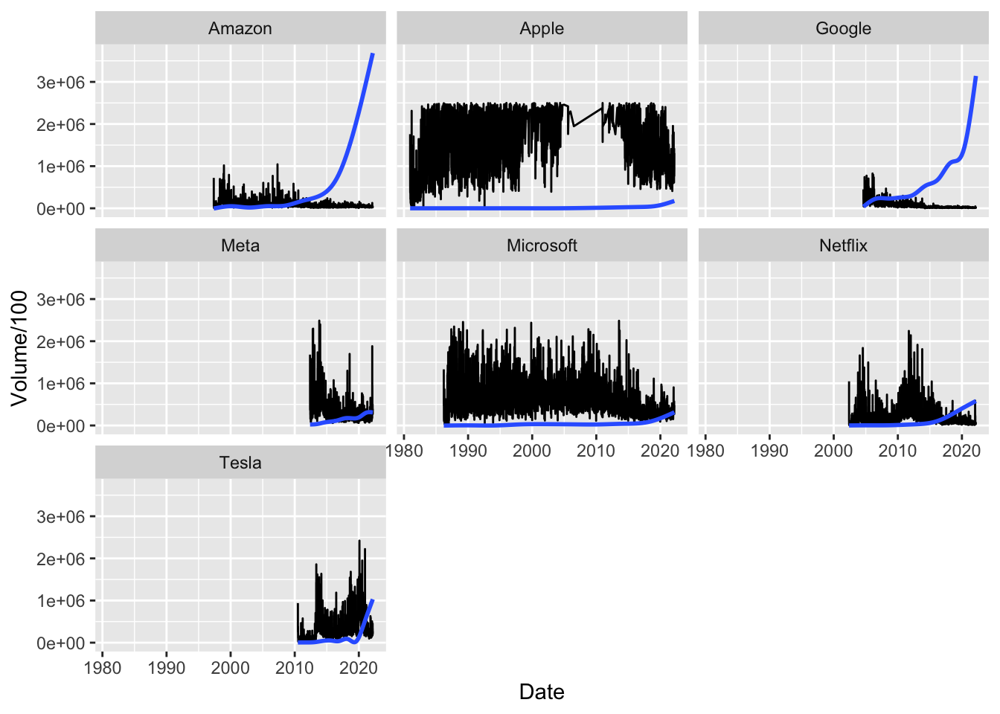
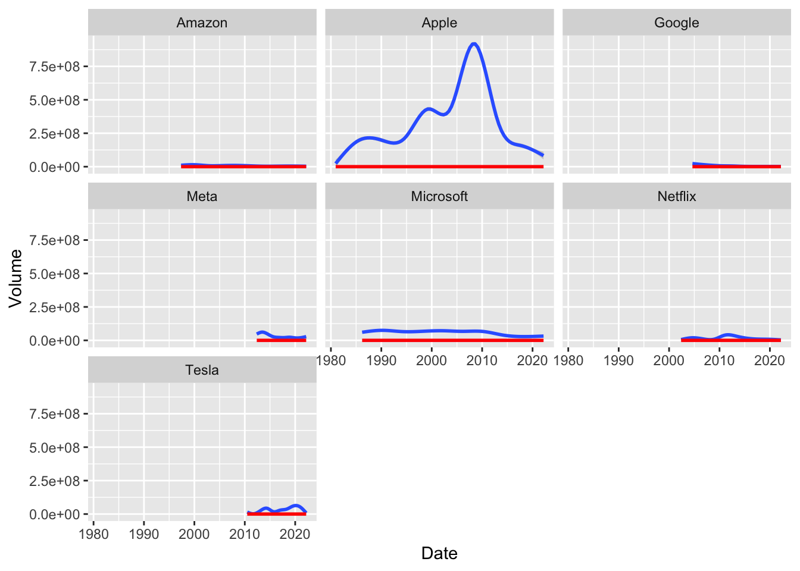

DANL 310, Midterm Exam
YOUR_NAME
2022-03-10
# install.packages("hrbrthemes")
library(tidyverse)
library(socviz)
library(lubridate)
library(hrbrthemes)
library(ggthemes)Question 1

titanic <- read_csv(
'https://bcdanl.github.io/data/titanic_cleaned.csv')## Rows: 756 Columns: 4## ── Column specification ────────────────────────────────────────────────────────────────────
## Delimiter: ","
## chr (2): class, sex
## dbl (2): age, survived##
## ℹ Use `spec()` to retrieve the full column specification for this data.
## ℹ Specify the column types or set `show_col_types = FALSE` to quiet this message.titanic$survived <- factor(titanic$survived, levels = c(0,1),
labels = c("Died", "Survived"))
titanic$class <- factor(titanic$class, levels = c("1st","2nd","3rd"),
labels = c("1st","2nd","3rd"))
ggplot(titanic) +
geom_bar(aes(sex, fill = sex),alpha = .8)+
facet_grid(class~survived) +
theme(legend.position = "none",
strip.background = element_rect(
color="grey", fill="lightgrey"
))+
scale_fill_manual(values=c("darkorange","blue"))+
labs(x=NULL, y = "number of passengers")
Question 2

climate_opinion_long <- read_csv(
'https://bcdanl.github.io/data/climate_opinion_2021.csv')## Rows: 6284 Columns: 4## ── Column specification ────────────────────────────────────────────────────────────────────
## Delimiter: ","
## chr (2): GeoName, belief
## dbl (2): id, perc##
## ℹ Use `spec()` to retrieve the full column specification for this data.
## ℹ Specify the column types or set `show_col_types = FALSE` to quiet this message.# Use `county_map` data from the `socviz` package.
# Do not use coord_map().
###############################################################################
# Variable description
###############################################################################
# happening: Estimated % of adults who think global warming is happening in 2021.
# human: Estimated % of adults who think global warming is mostly caused by human activities in 2021
###############################################################################
library(socviz)
county_map = socviz::county_map
county_map$id <- as.numeric(county_map$id)
county_full <- left_join(county_map, climate_opinion_long, by = "id")
county_full <- filter(county_full, !is.na(belief))
ggplot() + geom_polygon(data = county_full,
mapping = aes(x = long, y = lat, group = group,
fill = perc),
color = "grey60", size = 0.1) +
facet_grid(~belief,drop=T)+
theme(plot.margin = unit( c(1, 1, 4, 0.5), "cm"),
legend.position = c(0.5, -.15),
legend.justification = c(.5,.5),
legend.title = element_text(size=13),
legend.spacing.x = unit(1, 'cm'),
strip.background = element_rect(fill = "white",
color = "white",
size = .1,
)
) +
scale_fill_gradient2(
low = 'blue',
high = 'red',
na.value = "grey80")
Question 3

eia_table <- read_csv(
'https://bcdanl.github.io/data/table_eia_20220309.csv')## New names:
## * `` -> ...1## Rows: 265 Columns: 7## ── Column specification ────────────────────────────────────────────────────────────────────
## Delimiter: ","
## chr (1): mon_yr
## dbl (6): ...1, retail_price, refining, dist_mkt, taxes, crude_oil##
## ℹ Use `spec()` to retrieve the full column specification for this data.
## ℹ Specify the column types or set `show_col_types = FALSE` to quiet this message.eia_table <- eia_table[,-1]
###############################################################################
# Variable description
###############################################################################
# mon_yr: monthly time (from January 2000 to January 2022)
# retail_price: retail price of regular gasoline (US dollars per gallon)
# refining: percentage of refining on retail_price
# dist_mkt: percentage of distribution and marketing on retail_price
# taxes: percentage of taxes on retail_price
# crude_oil: percentage of crude oil on retail_price
###############################################################################
eia_table$mon_yr <- my(eia_table$mon_yr)
ggplot(eia_table, aes(x = mon_yr, y = retail_price)) +
geom_line(aes(fill = "refining")) +
geom_area(fill = 'red', alpha = .5, color = 'white')+
geom_line(aes(x = mon_yr, y = taxes))## Warning: Ignoring unknown aesthetics: fill
# geom_line, fill
# use myQuestion 4
Describe the relationship between trading volume and stock price for the largest IT companies in the world.
Did the relationship vary by companies and by the time periods?
Feel free to use the filter() function to restrict observations for your plots.
tech_stock_trading <- read_csv(
'https://bcdanl.github.io/data/tech_stock_trading.csv')## Rows: 40526 Columns: 8## ── Column specification ────────────────────────────────────────────────────────────────────
## Delimiter: ","
## chr (1): company
## dbl (6): Open, High, Low, Close, Adj Close, Volume
## date (1): Date##
## ℹ Use `spec()` to retrieve the full column specification for this data.
## ℹ Specify the column types or set `show_col_types = FALSE` to quiet this message.tech_stock_trading <- tech_stock_trading %>%
filter(Volume < 2.5e+08)
ggplot(tech_stock_trading)+
geom_line(aes(Date, Volume/100))+
geom_smooth(aes(Date,Close*1000))+
facet_wrap(~company)## `geom_smooth()` using method = 'gam' and formula 'y ~ s(x, bs = "cs")'
tech_stock_trading <- read_csv(
'https://bcdanl.github.io/data/tech_stock_trading.csv')## Rows: 40526 Columns: 8## ── Column specification ────────────────────────────────────────────────────────────────────
## Delimiter: ","
## chr (1): company
## dbl (6): Open, High, Low, Close, Adj Close, Volume
## date (1): Date##
## ℹ Use `spec()` to retrieve the full column specification for this data.
## ℹ Specify the column types or set `show_col_types = FALSE` to quiet this message.ggplot(tech_stock_trading)+
geom_smooth(aes(x = Date, y = Volume))+
geom_smooth(aes(x = Date, y = Close*100), color = 'red') +
facet_wrap(~company)## `geom_smooth()` using method = 'gam' and formula 'y ~ s(x, bs = "cs")'## `geom_smooth()` using method = 'gam' and formula 'y ~ s(x, bs = "cs")'